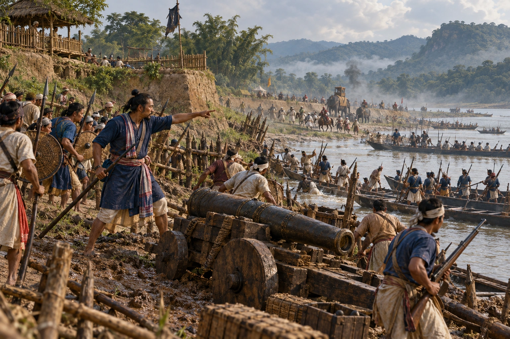

Battle of Itakhuli: The Mughals Driven to the Manas
August 1682 · The Tungkhungia kings

Gadadhar Singha's three-pronged army and navy close on Guwahati. After the naval battle at Paniduar on 15 August, the Itakhuli fort falls and the Mughals are chased to the Manas river, which becomes the accepted border. The Ahom–Mughal wars end.
Anonymous troops depict the riverine breakthrough and its aftermath; Gadadhar is not personally placed on the battlefield. Exact fort layout is reconstructed.
People: Gadadhar Singha (Supaatphaa)